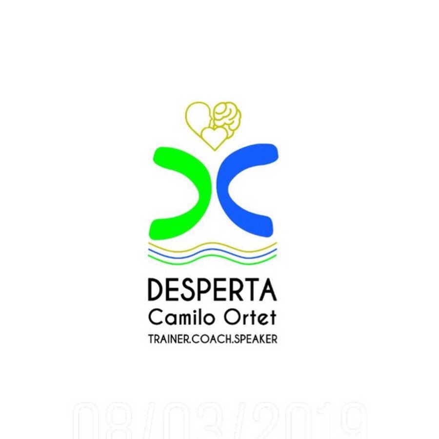

Proposta Estratégica
Proposta de Implementação
Estratégica
Refundação Desperta Academy
Preparado por: Marca Digital
Para: Dr. Camilo Ortet — CEO & Fundador, Desperta Academy
Data: 6 de Abril de 2026
Período: 6 de Abril — 30 de Abril de 2026
Início da Execução Plena: 1 de Maio de 2026
Índice
01 Sumário Executivo
02 Contexto e Diagnóstico
03 Análise Competitiva
04 Estratégia de Posicionamento
05 Plano de Implementação — 4 Semanas
06 Plataforma CRM + Agente de Inteligência Artificial
07 Estratégia de Conteúdo e Comunicação
08 Indicadores de Sucesso (KPIs)
09 Visão de Refundação e Modelo de Mentoria
10 Orçamento e Modelo Comercial
11 Anexos
1 Sumário Executivo
A Oportunidade
A Desperta Academy possui um activo relacional e reputacional acumulado ao longo de 16 anos que está largamente invisível e subaproveitado. O seu fundador, Dr. Camilo Ortet, reúne uma trajectória profissional excepcional — BPI (Portugal), BFE e BCI (Moçambique), KPMG, BFA, BAI, BMF, CMC, INSS, Ministérios — com participação em projectos do Banco Mundial, FMI, APAD e PoDE, o que confere à Desperta uma credibilidade que nenhum concorrente directo consegue igualar no mercado angolano de formação executiva.
40+
Organizações Servidas
28+
Anos Experiência Fundador
O Problema
- Os canais digitais estão inactivos ou desalinhados
- A base de 40-50 clientes históricos está dormente
- Não existe um sistema de gestão de contactos, leads ou relacionamento (CRM)
- O conteúdo publicado não reflecte a profundidade e autoridade real da marca
- A Desperta depende de contactos espontâneos, sem modelo de prospecção previsível
A Solução
A Marca Digital propõe um programa de implementação intensivo de 4 semanas (6 Abr — 30 Abr) que prepara toda a infraestrutura — digital, tecnológica e de conteúdo — para que a Desperta inicie execução plena a partir de 1 de Maio de 2026.
Presença Digital
Website, LinkedIn, Instagram profissionais e estratégicos
CRM + Agente IA
Plataforma própria com inteligência artificial integrada
Reactivação
Base de clientes segmentada e campanha de reaproximação
Resultado Esperado: No dia 1 de Maio de 2026, a Desperta terá um ecossistema digital operacional, uma base de clientes reactivada e as ferramentas para crescer de forma consistente, previsível e escalável.
2 Contexto e Diagnóstico
2.1 Perfil do Fundador — Dr. Camilo Ortet
O Dr. Camilo Ortet é um profissional com mais de 28 anos de experiência nos sectores bancário, financeiro, governamental e de formação, com carreira internacional em Portugal, Moçambique e Angola.
Sector Bancário e Financeiro (20+ anos — Portugal, Moçambique e Angola)
| Período | Cargo | Organização |
|---|
| 2014–2015 | Assessor da Comissão Executiva — Levantamento crítico Carteira de Crédito e Portfólio do Mútuo (Auditoria Forense) | BMF — BAI Micro Finanças (Angola) |
| 2012–2015 | Assessor da Comissão Executiva e Director para o Acompanhamento, Controlo e Recuperação do Crédito | BAI — Banco Angolano de Investimentos |
| 2009–2010 | Director de Acompanhamento e Recuperação de Crédito | BFA — Banco de Fomento Angola |
| 2008–2009 | Recovery and Restructuring Manager of Financial Advisory Services and Forehead for Financial Services | KPMG Angola |
| 2006–2008 | Director do GRC — Gabinete de Recuperação de Crédito | BCI — Banco Comercial e de Investimentos (Moçambique) |
| 2004–2006 | Co-Director da Direção de Empresas, Corporate Finance — Unidade das Grandes Empresas | BCI Fomento (Moçambique) — Banca de Empresas e Banca de Particular |
| 1999–2004 | Analista de Crédito e Gerente de Conta/Corporate (Sénior) | BFE — Banco de Fomento Exterior de Moçambique (Grupo BPI, Portugal) |
| 1998–1999 | Estágio Multidisciplinar e Gestor Júnior de apoio ao GPS | BPI — Banco Português de Investimentos (Portugal) |
Sector Público, Regulador e Empresarial
| Período | Cargo | Organização |
|---|
| 2020–2023 | Assessor/Consultor para a Reforma Estratégica do INSS — Coordenar Comissão dos Activos + Coaching e Mentoria + PCA da Osilo, Lda. | INSS – MAPTSS |
| 2017–2020 | Consultor do Director Geral do SIAC — Coaching e Mentoria / Formação, Treinamento e Desenvolvimento | SIAC – MAPTSS |
| 2016–Actual | Director Geral | Angocajú, Lda (agro-indústria) |
| 2015–2016 | Director Dept. Supervisão Auditores e Emitentes | CMC/MINFIN — Comissão Mercado de Capitais |
| 2010–2012 | Consultor/Assessor do Gabinete do Vice Ministro do Comércio | MINCO — Ministério do Comércio |
Projectos Internacionais
Para além da carreira institucional, o Dr. Camilo Ortet participou em projectos de organismos internacionais de referência:
| Organismo | Âmbito |
|---|
| Banco Mundial (BM) | Projectos de desenvolvimento em Moçambique |
| FMI — Fundo Monetário Internacional | Projectos de reforma e estabilização financeira |
| APAD | Apoio ao desenvolvimento empresarial |
| PoDE — Programa de Desenvolvimento Empresarial | Patrocinado pelo Banco Mundial e União Europeia (Maputo) |
Ensino, Formação e Coaching
| Período | Cargo | Organização |
|---|
| 2019–Presente | Trainer, Master Coach, Speaker, Mentor — Director Geral | DESPERTA Academy (Angola) |
| 2002–2008 | Docente Coordenador — Introdução à Gestão, Finanças Públicas e Finanças Internacionais | ESGT/ISPU — Universidade Politécnica (Maputo) |
| 2004–2008 | Docente Coordenador — Propedêutica Comercial | IMEP — Universidade Politécnica (Maputo) |
| 1987–1991 | Professor de Matemática, Física e Português — II e III Níveis | Escola Secundária Eurico Gonçalves e Nicolau Gomes Spencer (Luanda) |
Nota: O Dr. Camilo Ortet começou a ensinar aos 17 anos, após concluir o Ensino Médio no INE — Instituto Normal de Educação (1985–1989), com especialização em Pedagogia e Didática Geral para Matemática e Física. A vocação para formar pessoas é anterior à carreira bancária.
Certificações: FEBRACIS (Federação Brasileira de Coaching Integral Sistémico) + IBC (Instituto Brasileiro de Coaching) + Bras-Coaching (Formação para Mentoria Profissional Pessoal e Organizacional) + Instituto Kaercher (Treinador Comportamental, Brasil) + MTI (Método de Treinamento de Instrutores)
Formação Académica: Licenciatura em Gestão e Administração Pública — ISCSP, Universidade Técnica de Lisboa (1993–1998). Especialização em Gestão Urbana e Municipal. Frequência do curso de Gestão de Empresas no ISEG — UTL (1992–1993).
Ensino Médio: INE — Instituto Normal de Educação, Pedagogia e Didática Geral com opção para Matemática e Física (1985–1989), Angola.
Conclusão: O Dr. Camilo Ortet não precisa de construir credibilidade — precisa de a tornar visível. O seu curriculum é mais forte que o de 90% dos concorrentes no mercado angolano de formação executiva.
2.2 A Desperta Academy — Identidade
| Campo | Detalhe |
|---|
| Razão Social | DESPERTA (SU), Lda |
| Actividade | FTD — Formação, Treinamento e Desenvolvimento + Workshops Palestrais |
| Localização | Patriota, Luanda, Angola |
| Website | www.despertaacademy.com |
| Contactos | +244 921 544 899 / +244 921 943 448 |
| Email | camiloortet.desperta@gmail.com |
Programas Assinatura (3 Pilares)
"Eu, o Líder"
Liderança consciente, transformação pessoal, crenças limitantes
"Eu, o Team"
Equipas de alto rendimento, empoderamento colectivo
"Eu, o Dream Building"
Alta performance, comunicação, liderança aplicada
Modelo Pedagógico: Três dimensões — Saber-Saber (conhecimento) + Saber-Fazer (competências) + Saber-Ser/Estar (atitude e comportamento).
Catálogo Técnico: 20+ formações nas áreas de gestão, liderança, negociação, banca, crédito, risco, estratégia e finanças.
Parceiros: Dr. Fábio Galvão — Instituto Fábio Galvão (Brasil), mentor e formador pontual em liderança, burnout e desenvolvimento emocional.
2.3 Auditoria dos Canais Digitais
Website (despertaacademy.com)
| Critério | Estado | Avaliação |
|---|
| Plataforma | Wix (Thunderbolt) | Funcional mas limitado para SEO |
| Páginas | 13 + 23 de serviços | Estrutura existente, conteúdo fraco |
| Última actualização sitemap | Abril 2025 | 11 meses desactualizado |
| Blog / Conteúdo | Inexistente | Sem autoridade orgânica |
| Testemunhos | Ausentes | 16 anos sem prova social |
| SEO | Títulos genéricos | Precisa reescrita |
| Agendamento online | Wix Bookings activo | Funcional |
Instagram @camiloortet (Perfil Pessoal)
| Métrica | Valor | Análise |
|---|
| Posts | 1.291 | Volume elevado |
| Seguidores | 831 | Baixo para o volume |
| Seguindo | 102 | Rácio saudável |
| Website na bio | www.desperta.co | Activo |
| Rácio seg/post | 0.64 | Benchmark: >3 |
Análise de Conteúdo
| Tipo | Frequência | Avaliação |
|---|
| Frases motivacionais genéricas | ~40% | Demasiado — posiciona como "mais um coach" |
| Fotos de formações/eventos | ~25% | Autênticas, bom potencial |
| Vídeos/Reels | ~15% | Conteúdo genuíno |
| Conteúdo Angocajú | ~10% | Dilui posicionamento |
| Conteúdo religioso | ~10% | Pode desalinhar público corporativo |
Instagram @desperta.co (Perfil Institucional)
| Métrica | Valor | Análise |
|---|
| Posts | 357 | Volume moderado |
| Seguidores | 322 | Muito baixo |
| Seguindo | 549 | Rácio negativo (follow-for-follow) |
| Bio | Vazia | Crítico |
| Website na bio | Nenhum | Crítico |
LinkedIn — Camilo Ortet
| Métrica | Valor | Análise |
|---|
| Conexões | 500+ | Base sólida |
| Banner | Personalizado DESPERTA | Profissional |
| Resumo | Lista de cargos | Funcional mas não narrativo |
| Competências | Business Strategy, Financial Advisory, Internal Audit | Alinhadas |
Oportunidade principal: O LinkedIn é o canal de maior ROI para o Camilo. O público-alvo (executivos, gestores, banca, sector público) vive no LinkedIn. Com o CV dele e 500+ conexões, publicações regulares podem alcançar milhares de profissionais angolanos.
2.4 Base de Clientes Existente
A Desperta serviu aproximadamente 40-50 organizações ao longo de 16 anos, incluindo instituições bancárias (BAI, BFA, BCI, Banco de Fomento), organismos governamentais (Ministério das Finanças, INSS/MAPTSS), empresas brasileiras a operar em Angola e igrejas/instituições sociais.
Este é o activo de maior valor da Desperta. O custo de aquisição destes clientes já foi suportado. Reactivá-los representa a oportunidade de maior retorno com menor investimento.
3 Análise Competitiva
3.1 Concorrentes Locais Directos
| Concorrente | Posicionamento | Força | Fraqueza vs Desperta |
|---|
| MOVE Angola (Dardano Santos) | Conferência internacional de liderança | 2.500+ participantes | Evento pontual, não formação contínua |
| Exec Angola | Educação executiva premium | Networking C-level | Elitista, pouco acessível |
| Angola Business School (Nova SBE) | Business school internacional | Marca Nova, 2.000+ formados | Académico, não transformacional |
| Academia BAI | Academia corporativa | Respaldo institucional BAI | Fechada ao ecossistema BAI |
| ALGL | Formação executiva/liderança | Nome directo a liderança | Menos experiência |
| NOX Angola | Capital humano integrado | RH + coaching + formação | Generalista |
| Insignis West | Consultoria + academia | Multi-sector | Consultoria > formação |
| GetTraining | 500+ cursos, escala | Presença Moçambique | Volume sem profundidade |
| LIDERA Angola | Formação profissional | Foco exclusivo | Posicionamento genérico |
| Novacademia | Plataforma digital, INEFOP | Modelo digital-first | Limitado a vendas/BPM |
3.2 Operadores Internacionais em Angola
| Concorrente | Origem | Força | Limitação |
|---|
| PwC Academy | Global (Big4) | Marca global, credibilidade | Hard skills, não humano |
| CEGOC / Luanda Business School | Portugal | 35+ anos em Angola | Modelo português |
| HighSkills | Portugal | Catálogo amplo PALOP | Sem raízes locais |
| KEY Corporate | Portugal | 1.000+ cursos, CPLP | Volume sem personalidade |
| TeamWork | Portugal | Metodologia desportiva, 25.000+ formandos | Portuguesa, não angolana |
| Vantagem+ | Portugal | 30+ anos, escritório Luanda | Modelo genérico |
3.3 Lacunas de Mercado = Oportunidades
| Lacuna Identificada | Oportunidade para Desperta |
|---|
| Ninguém combina desenvolvimento humano + formação técnica bancária | Posicionamento único: quem viveu a banca por dentro E forma líderes por dentro |
| Poucas empresas angolanas dominam (maioria é portuguesa) | Autenticidade angolana como diferenciador real |
| Zero conteúdo em português angolano genuíno | Linguagem local = conexão mais profunda |
| Sem comunidade pós-formação no mercado | Programa alumni = receita recorrente |
| Nenhum concorrente usa IA como suporte operacional | Desperta + IA = eficiência, escala e diferenciação |
| Desenvolvimento pessoal holístico sub-representado | Território "transformação de dentro para fora" proprietário |
4 Estratégia de Posicionamento
4.1 Posicionamento Proposto
"A Desperta é a única academia angolana fundada por quem viveu a liderança por dentro — de Portugal a Moçambique, do BPI ao BAI, da KPMG ao INSS, do Banco Mundial ao palco — com 16 anos a transformar pessoas e organizações de dentro para fora."
4.2 Território de Marca
| Território | Desperta | Concorrência |
|---|
| Transformação interior → exterior (Saber-Ser) | Exclusivo | Ninguém ocupa |
| Experiência real em banca + governo | Exclusivo | Ninguém tem CV equivalente |
| Competências humanas face à IA | Relevante | Apenas Academia BAI tangencia |
| Metodologias proprietárias | Diferenciador | TeamWork tem metáfora desportiva |
| Voz angolana autêntica | Genuíno | Maioria são portugueses |
| Formação bancária + desenvolvimento humano | Único | Nenhum faz as duas |
4.3 Proposta de Valor por Segmento
Sector Bancário e Financeiro
"O Dr. Camilo Ortet começou no BPI em Portugal, foi Gerente Corporate no BFE e Co-Director no BCI Fomento em Moçambique, Director no BAI e BFA em Angola, Manager na KPMG e Director na CMC. Participou em projectos do Banco Mundial e FMI. Ele não ensina banca — ele viveu-a em três países. A Desperta é a única academia que combina conhecimento técnico real com desenvolvimento de liderança e inteligência emocional para equipas bancárias."
Sector Público e Governamental
"Com experiência como Assessor/Consultor da Reforma Estratégica do INSS, Consultor do Director Geral do SIAC, Consultor do Ministério do Comércio e Director na CMC, o Dr. Camilo Ortet compreende a complexidade institucional angolana. A Desperta transforma gestores públicos em líderes conscientes e equipas em agentes de mudança."
Empresas e Organizações
"Em 16 anos, a Desperta transformou mais de 40 organizações em Angola. O nosso modelo — saber-saber, saber-fazer, saber-ser — produz mudanças que ficam, porque começa por dentro."
4.4 Slogan e Assinatura
Slogan proposto: "Desperta. Transforma. Lidera."
Assinatura de autoridade: "16 anos a despertar líderes em Angola"
5 Plano de Implementação — 4 Semanas
SEMANA 1 (6 - 12 Abr) ▓▓▓▓ FUNDAÇÕES — Correcções urgentes + CRM setup
SEMANA 2 (13 - 19 Abr) ▓▓▓▓ ORGANIZAÇÃO — Base clientes + conteúdo + Website
SEMANA 3 (20 - 26 Abr) ▓▓▓▓ CONSTRUÇÃO + ACTIVAÇÃO — Reactivação + conteúdo
SEMANA 4 (27 - 30 Abr) ▓▓▓▓ LANÇAMENTO — Tudo operacional + go-live
──────────────────────────────────────────────────────────────────
1 DE MAIO ████ EXECUÇÃO PLENA
Acções Urgentes (Dia 1-2)
| # | Acção | Responsável | Entregável |
|---|
| 1.1 | Preencher bio do Instagram @desperta.co | Marca Digital | Bio optimizada com proposta de valor + link |
| 1.2 | Adicionar link website na bio @desperta.co | Marca Digital | Link activo |
| 1.3 | Criar 4-5 destaques no Instagram @desperta.co | Marca Digital | Sobre, Programas, Testemunhos, Contacto, Resultados |
| 1.4 | Actualizar foto de perfil @desperta.co | Marca Digital + Camilo | Logo profissional consistente |
Setup CRM + Agente IA (Dia 1-7)
| # | Acção | Responsável | Entregável |
|---|
| 1.5 | Definir requisitos do CRM Desperta | Marca Digital | Documento de requisitos |
| 1.6 | Configurar ambiente de desenvolvimento CRM | Marca Digital (dev) | Ambiente staging activo |
| 1.7 | Estruturar base de dados: contactos, empresas, pipeline | Marca Digital (dev) | Schema da BD definido |
| 1.8 | Iniciar desenvolvimento módulo de contactos e empresas | Marca Digital (dev) | Sprint 1 iniciado |
Recolha de Materiais (Dia 1-7)
| # | Acção | Responsável | Prazo |
|---|
| 1.9 | Lista completa de clientes históricos | Dr. Camilo Ortet | 09/04 |
| 1.10 | Vídeos de palestras/formações existentes | Dr. Camilo Ortet | 12/04 |
| 1.11 | Fotos de eventos passados | Dr. Camilo Ortet | 12/04 |
| 1.12 | Testemunhos existentes (escritos ou vídeo) | Dr. Camilo Ortet | 12/04 |
| 1.13 | Materiais de formação (slides, manuais) | Dr. Camilo Ortet | 12/04 |
| 1.14 | Logos das empresas onde trabalhou | Dr. Camilo Ortet | 12/04 |
Organização da Base de Clientes
| # | Acção | Responsável | Entregável |
|---|
| 2.1 | Segmentar base de clientes em 3 tiers (Premium / Estratégico / Relacional) | Marca Digital | Segmentação documentada |
| 2.2 | Identificar decisores actuais (podem ter mudado) | Marca Digital + Camilo | Lista actualizada |
| 2.3 | Criar ficha por cliente no CRM | Marca Digital | Fichas importadas |
Catalogação de Conteúdo
| # | Acção | Responsável | Entregável |
|---|
| 2.4 | Catalogar e etiquetar vídeos (tema, duração, qualidade) | Marca Digital | Catálogo de vídeos |
| 2.5 | Seleccionar melhores fotos para redes sociais e website | Marca Digital | Banco de imagens curado |
| 2.6 | Transcrever e formatar testemunhos | Marca Digital | Testemunhos prontos |
| 2.7 | Identificar conteúdo reutilizável dos materiais de formação | Marca Digital | Lista de assets |
CRM — Sprint 2
| # | Acção | Entregável |
|---|
| 2.8 | Pipeline de vendas (leads → contacto → proposta → contrato) | Pipeline funcional |
| 2.9 | Histórico de interacções (chamadas, emails, reuniões) | Log de interacções |
| 2.10 | Importar base de clientes existente | Dados migrados |
| 2.11 | Integração agente IA — fase 1 (resumos e sugestões) | Agente IA v1 |
Website — Reescrita Estratégica
| # | Acção | Entregável |
|---|
| 3.1 | Reescrever homepage com proposta de valor clara | Copy homepage |
| 3.2 | Criar página "Sobre o Fundador" com trajectória + logos | Página publicada |
| 3.3 | Secção de testemunhos com logos de empresas | Secção na homepage |
| 3.4 | Reescrever páginas dos 3 programas assinatura | 3 páginas actualizadas |
| 3.5 | Optimizar SEO (títulos, meta descriptions, keywords) | SEO implementado |
| 3.6 | "Empresas que confiaram na Desperta" com logos | Barra de logos |
| 3.7 | Formulário de contacto integrado com CRM | Formulário activo |
LinkedIn — Optimização Estratégica
| # | Acção | Entregável |
|---|
| 3.8 | Reescrever resumo LinkedIn com narrativa | Novo resumo publicado |
| 3.9 | Artigo inaugural: "25 anos de carreira" | Artigo publicado |
| 3.10 | Preparar 8 posts para as próximas 4 semanas | Posts agendados |
| 3.11 | Optimizar secção de experiência | Perfil actualizado |
Instagram + CRM Sprint 3
| # | Acção | Entregável |
|---|
| 3.12 | Criar template visual unificado (cores, fontes, layout) | Kit de templates |
| 3.13 | Preparar 12 posts Instagram (3 semanas) | Posts prontos |
| 3.14 | Editar 3-5 reels de vídeos existentes | Reels editados |
| 3.15 | Definir estratégia de hashtags Angola | Lista hashtags |
| 3.16 | CRM: Dashboard principal | Dashboard funcional |
| 3.17 | CRM: Agente IA fase 2 (sugestões + alertas) | Agente IA v2 |
| 3.18 | CRM: Templates email/WhatsApp | Templates prontos |
| 3.19 | CRM: Testes internos com dados reais | Relatório de testes |
Campanha de Reactivação de Clientes
| # | Acção | Responsável | Entregável |
|---|
| 4.1 | Tier 1: contacto directo pelo Dr. Camilo (chamada + WhatsApp) | Dr. Camilo + Marca Digital | 10-15 contactos directos |
| 4.2 | Tier 2: email personalizado via CRM | Marca Digital | Emails enviados |
| 4.3 | Follow-up Tier 1: mensagem de valor | Marca Digital | Follow-up enviado |
| 4.4 | Solicitar testemunhos a clientes que respondem | Marca Digital + Camilo | Pedidos enviados |
| 4.5 | Agendar reuniões com clientes interessados | Marca Digital + Camilo | Reuniões no calendário |
Sequência de Reactivação (3 Toques)
| Toque | Timing | Canal | Mensagem |
|---|
| 1. Reaproximação | Dia 1 | Chamada (T1) / Email (T2) | Retomar contacto, partilhar novidades |
| 2. Valor gratuito | Dia 4-5 | WhatsApp / Email | Artigo, vídeo ou insight relevante |
| 3. Proposta | Dia 8-10 | Email + chamada | Programa específico para necessidade |
Conteúdo + CRM Sprint 4
| # | Acção | Entregável |
|---|
| 4.6 | Publicar 2 posts LinkedIn | Posts publicados |
| 4.7 | Publicar 4 posts Instagram @camiloortet | Posts publicados |
| 4.8 | Publicar 2 posts Instagram @desperta.co | Posts publicados |
| 4.9 | Publicar 1-2 reels | Reels publicados |
| 4.10 | Recolher 1-2 testemunhos em vídeo (30-60 seg) | Vídeos testemunho |
| 4.11 | CRM: Agente IA fase 3 (prospecção + follow-up automático) | Agente IA v3 |
| 4.12 | Formação do Dr. Camilo no CRM (1h) | Sessão realizada |
| 4.13 | Registar interacções da campanha no CRM | Dados actualizados |
Validação e Go-Live
| # | Acção | Entregável |
|---|
| 5.1 | Revisão final do website (textos, links, formulários, SEO) | Website validado |
| 5.2 | Revisão final dos perfis de redes sociais | Perfis alinhados |
| 5.3 | Teste end-to-end do CRM | CRM validado |
| 5.4 | Teste do agente de IA | Agente IA validado |
| 5.5 | Calendário editorial de Maio (30 dias) | Calendário completo |
| 5.6 | Relatório de resultados da campanha de reactivação | Relatório de métricas |
Documentação e Preparação
| # | Acção | Entregável |
|---|
| 5.7 | Manual de uso do CRM | PDF/vídeo |
| 5.8 | Guia de publicação em redes sociais | Brand guide |
| 5.9 | Kit de prospecção (scripts, templates, sequências) | Documento |
| 5.10 | Apresentação de resultados ao Dr. Camilo | Reunião de encerramento |
| 5.11 | Metas mensais de prospecção | Funil de vendas |
| 5.12 | Calendário de eventos/workshops Q2-Q3 | Calendário |
| 5.13 | Oportunidades mídia tradicional para Maio | Lista |
| 5.14 | Roadmap expansão PALOP (Moçambique) | Roadmap |
6 Plataforma CRM + Agente de Inteligência Artificial
6.1 Arquitectura
┌──────────────────────────────────────────────────────┐
│ CRM DESPERTA │
├──────────────────────────────────────────────────────┤
│ ┌─────────────┐ ┌─────────────┐ ┌─────────────┐ │
│ │ CONTACTOS │ │ EMPRESAS │ │ FORMADORES │ │
│ │ & LEADS │ │ & CLIENTES │ │ & MENTORES │ │
│ └──────┬──────┘ └──────┬──────┘ └──────┬──────┘ │
│ └────────────────┼─────────────────┘ │
│ ┌───────────────────────▼───────────────────────┐ │
│ │ PIPELINE DE VENDAS │ │
│ │ Lead → Contacto → Proposta → Contrato → │ │
│ │ Activo → Renovação │ │
│ └───────────────────────┬───────────────────────┘ │
│ ┌───────────────────────▼───────────────────────┐ │
│ │ AGENTE DE INTELIGÊNCIA ARTIFICIAL │ │
│ │ • Sugestões de próximo passo por lead │ │
│ │ • Resumo automático de interacções │ │
│ │ • Alertas de follow-up │ │
│ │ • Geração de emails/WhatsApp personalizados │ │
│ │ • Lead scoring (0-100) │ │
│ │ • Previsão de pipeline e receita │ │
│ └───────────────────────┬───────────────────────┘ │
│ ┌───────────────────────▼───────────────────────┐ │
│ │ DASHBOARD & RELATÓRIOS │ │
│ └───────────────────────────────────────────────┘ │
├──────────────────────────────────────────────────────┤
│ INTEGRAÇÕES: WhatsApp | Email | Website | Calendário │
└──────────────────────────────────────────────────────┘
6.2 Módulos Principais
Módulo 1: Contactos e Empresas
| Funcionalidade | Descrição |
|---|
| Ficha de contacto | Nome, cargo, empresa, telefone, email, WhatsApp, notas |
| Ficha de empresa | Nome, sector, dimensão, histórico com Desperta, tier |
| Tags e segmentos | Banca, Governo, Empresas, PALOP, Ex-cliente, Lead |
| Importação em massa | Upload de ficheiro Excel/CSV |
| Pesquisa inteligente | Por nome, empresa, sector, tag |
Módulo 2: Pipeline de Vendas
| Estágio | Descrição | Acção Esperada |
|---|
| Lead | Contacto identificado | Primeiro contacto |
| Contacto | Primeira interacção realizada | Qualificar necessidade |
| Qualificado | Necessidade identificada | Preparar proposta |
| Proposta | Proposta enviada | Follow-up e negociação |
| Negociação | Discussão de termos | Fechar acordo |
| Contrato | Acordo fechado | Executar formação |
| Activo | Formação em curso/concluída | Recolher feedback |
| Renovação | Cliente passado | Campanha de reactivação |
Módulo 3: Agente de Inteligência Artificial
| Capacidade | Descrição | Valor |
|---|
| Sugestão de próximo passo | Analisa histórico e sugere acção | Nenhum lead esquecido |
| Resumo de interacções | Gera resumo automático | Poupança de tempo |
| Alertas inteligentes | Notifica leads frios e renovações | Proactividade |
| Geração de mensagens | Emails/WhatsApp personalizados | Comunicação consistente |
| Lead scoring | Pontuação 0-100 por lead | Priorização de esforço |
| Previsão de pipeline | Receita provável por estágio | Planeamento financeiro |
| Sugestão de conteúdo | Recomenda conteúdo por segmento | Social selling |
| Análise de sentimento | Avalia tom das interacções | Retenção |
Módulo 4: Bolsa de Formadores e Mentores
| Funcionalidade | Descrição |
|---|
| Perfil de formador | Nome, especialidade, certificações, disponibilidade, tarifa |
| Matching IA | Sugere formador ideal por tema e perfil do cliente |
| Agenda partilhada | Disponibilidade de todos os formadores |
| Avaliação | Classificação por cliente após formação |
6.3 Stack Tecnológica
| Componente | Tecnologia | Justificação |
|---|
| Frontend | Next.js + Tailwind CSS | Performance, SSR, experiência moderna |
| Backend / BD | Supabase (PostgreSQL) | RLS, real-time, auth integrado |
| Agente IA | Claude API (Anthropic) | Raciocínio avançado e geração |
| Hosting | Vercel | Deploy automático, CDN global |
| WhatsApp | API Business (webhook) | Canal principal em Angola |
| Email | Resend / SendGrid | Transaccional + campanhas |
6.4 Cronograma de Desenvolvimento
| Sprint | Semana | Entregáveis |
|---|
| Sprint 1 | 6 – 12 Abr | Schema BD + módulo contactos/empresas (CRUD) |
| Sprint 2 | 13 – 19 Abr | Pipeline + histórico + importação dados + IA fase 1 |
| Sprint 3 | 20 – 26 Abr | Dashboard + Agente IA completo + templates + testes |
| Sprint 4 | 27 – 30 Abr | Bolsa formadores + relatórios + formação + go-live |
7 Estratégia de Conteúdo e Comunicação
7.1 Pilares de Conteúdo
| Pilar | % | Objectivo | Exemplos |
|---|
| Autoridade | 35% | Posicionar como referência | Insights liderança, frameworks, tendências |
| Prova Social | 25% | Demonstrar resultados | Testemunhos, logos clientes, fotos formações |
| Storytelling | 20% | Humanizar e diferenciar | Histórias da carreira, lições, bastidores |
| Educação | 15% | Gerar valor gratuito | Dicas, frameworks, carrosséis |
| Chamada à Acção | 5% | Converter em leads | Workshops, diagnóstico gratuito |
7.2 Calendário por Canal
LinkedIn (Dr. Camilo Ortet)
Frequência: 2-3 publicações/semana | Formato: Texto longo + imagem | Horário: Terça e Quinta, 8h-9h
Temas para Abril
- "25 anos de carreira: o que descobri sobre liderança" (artigo inaugural)
- "O que a KPMG me ensinou sobre recuperar — crédito e pessoas"
- "Porque é que os bancos angolanos precisam de inteligência emocional"
- "Eu, o Líder: a formação que começa por dentro"
- "O que 40 organizações me ensinaram sobre equipas"
- "Saber-Saber, Saber-Fazer, Saber-Ser — as 3 dimensões que faltam"
- "A Desperta está de volta. E vem diferente."
- "IA vai substituir formadores? Não. Vai substituir os que não formam pessoas."
Instagram @camiloortet
Frequência: 4-5 publicações/semana | Formatos: Reels (40%), Carrosséis (30%), Estáticos (20%), Stories (diário)
Mudanças imediatas de conteúdo
| De | Para |
|---|
| 40% frases motivacionais genéricas | 10% — só frases com substância real |
| 0% storytelling da trajectória | 25% — histórias reais diferenciadores |
| 10% conteúdo Angocajú | 0% — separar marcas |
| 0% call-to-action | Cada post com CTA claro |
7.3 Conteúdo Prioritário
| # | Conteúdo | Formato | Canal | Prazo |
|---|
| 1 | Artigo "25 anos de carreira" | Texto longo | LinkedIn | Sem 3 |
| 2 | Vídeo "A Desperta está de volta" (manifesto) | Reel 60-90s | IG + LI | Sem 3 |
| 3 | Carrossel "Modelo Saber-Saber/Fazer/Ser" | 10 slides | Instagram | Sem 3 |
| 4 | Testemunho em vídeo de ex-cliente | Reel 30-60s | IG + LI | Sem 4 |
| 5 | "Empresas que confiaram na Desperta" | Imagem logos | IG + LI | Sem 4 |
| 6 | "O que aprendi no BAI sobre liderança" | Reel 60s | IG + LI | Sem 4 |
| 7 | Carrossel "Eu, o Líder — explicado" | 8 slides | Instagram | Sem 5 |
| 8 | Post "1 de Maio — novo capítulo" | Imagem + texto | Todos | 30 Abr |
7.4 Mídia Tradicional (Maio em diante)
| Canal | Abordagem |
|---|
| Jornal Expansão | Artigos de opinião sobre liderança + IA |
| Jornal de Angola | Entrevistas sobre formação executiva |
| TPA / TV Zimbo | Participação em programas de economia |
| Rádio | Entrevistas sobre liderança e empreendedorismo |
7.5 Parcerias Estratégicas
| Parceiro | Tipo | Valor |
|---|
| MOVE Angola (Dardano Santos) | Camilo como speaker | Exposição a 2.500+ líderes |
| Academia BAI | Parceria de conteúdo | Acesso à rede BAI |
| CEGOC / Luanda Business School | Parceria de distribuição | Infraestrutura e rede |
| Universidade Politécnica | Docente convidado | Credibilidade académica |
| Instituto Fábio Galvão (Brasil) | Co-criação de programas | Diferenciação metodológica |
8 Indicadores de Sucesso (KPIs)
8.1 KPIs da Fase de Implementação (6 Abr — 30 Abr)
| Indicador | Meta |
|---|
| Website reescrito e optimizado | 100% das páginas prioritárias |
| CRM operacional com agente IA | Go-live até 30/04 |
| Base de clientes importada e segmentada | 100% dos contactos |
| Clientes Tier 1 contactados | 100% |
| Clientes com resposta positiva | ≥30% |
| Reuniões agendadas com ex-clientes | ≥10 |
| Testemunhos recolhidos | ≥5 |
| Posts LinkedIn publicados | ≥6 |
| Posts Instagram publicados | ≥16 |
| Calendário editorial Maio preparado | 30 dias completos |
8.2 KPIs de Execução (a partir de 1 Maio)
| Indicador | Meta Mensal | Meta Trimestral (Mai-Jul) |
|---|
| Seguidores Instagram @camiloortet | +200/mês | 1.500+ total |
| Conexões LinkedIn | +100/mês | 800+ total |
| Leads gerados (CRM) | 15-20 | 50+ |
| Propostas enviadas | 5-8 | 18+ |
| Contratos fechados | 2-3 | 6-8 |
| Testemunhos publicados | 2-3 | 10+ |
| Aparições mídia | 1-2 | 4+ |
| Taxa de conversão pipeline | ≥20% | ≥25% |
| NPS clientes | ≥8/10 | ≥8.5/10 |
9 Visão de Refundação e Modelo de Mentoria
9.1 Da Reactivação à Refundação
Este projecto vai além de um simples relançamento digital. Trata-se de uma refundação profunda e extensiva da DESPERTA — uma contextualização do projecto original aos modelos actuais de desenvolvimento, sustentabilidade e melhores referências do mercado.
A diferença entre relançar e refundar: Relançar é voltar com a mesma proposta e novas ferramentas. Refundar é repensar o posicionamento, alinhar a persona do fundador ao projecto de forma estratégica, e criar novos processos que garantam disciplina organizacional e cultura de excelência.
Os 4 Pilares da Refundação
| # | Pilar | Descrição |
|---|
| 1 | Levantamento Profundo | Diagnóstico abrangente de 16 anos de activos — relacional, reputacional, metodológico e digital — para identificar o que preservar, o que actualizar e o que criar |
| 2 | Reforma Faseada | Contextualização da DESPERTA aos modelos de desenvolvimento, sustentabilidade e melhores referências do mercado angolano e internacional |
| 3 | Alinhamento Persona–Projecto | Linkar a persona Camilo Ortet ao DESPERTA de forma estratégica e tacticamente alinhada — a marca pessoal e a marca institucional devem reforçar-se mutuamente |
| 4 | Disciplina Organizacional | Promoção de novos processos e procedimentos que criem um novo clima organizacional, reforçando os ganhos históricos e instalando uma cultura organizacional de crescimento sustentável |
9.2 Modelo de Mentoria — A Experiência DESPERTA
A DESPERTA não é apenas uma academia de formação — é um modelo de mentoria baseada em ferramentas de coaching, potenciado pela experiência pessoal excepcional do seu principal promotor. Este modelo é o verdadeiro diferenciador no mercado angolano.
O que distingue a mentoria DESPERTA
| Dimensão | Formação Tradicional | Mentoria DESPERTA |
|---|
| Base | Conteúdo teórico e académico | Experiência vivida em 3 países + frameworks de coaching |
| Método | Transferência de conhecimento | Transformação pessoal + desenvolvimento de competências |
| Duração do impacto | Dias/semanas após formação | Mudança comportamental duradoura |
| Relação | Formador → formando | Mentor → mentorado (acompanhamento) |
| Credibilidade | Certificação académica | Historial de 28+ anos em posições de liderança real |
Modelo Saber-Saber / Saber-Fazer / Saber-Ser aplicado à mentoria
Saber-Saber
Conhecimento técnico — banca, finanças, gestão, estratégia. Vindo de quem viveu estas realidades.
Saber-Fazer
Competências práticas — liderança, negociação, gestão de equipas, tomada de decisão. Treinadas com casos reais.
Saber-Ser/Estar
Atitude e comportamento — inteligência emocional, consciência, valores. O interior que transforma o exterior.
9.3 "Uma Hora com Camilo Ortet" — Isca de Lead Estratégica
Uma das formas mais poderosas de gerar leads qualificados é oferecer acesso directo ao fundador num formato exclusivo e acessível.
Conceito: Um "café" ou sessão de 1 hora com o Dr. Camilo Ortet, onde executivos, gestores ou equipas de RH podem explorar os seus desafios de liderança e receber orientação personalizada — sem compromisso.
Formato e Mecânica
| Elemento | Detalhe |
|---|
| Nome | "Uma Hora com Camilo Ortet" / "Café com o Dr. Camilo" |
| Duração | 60 minutos |
| Formato | Presencial (café/escritório) ou Zoom |
| Público | Decisores: directores, gestores RH, C-level |
| Custo | Gratuito (isca) ou valor simbólico (posicionamento premium) |
| Objectivo | Diagnóstico inicial → identificar necessidade → propor programa DESPERTA |
| Capacidade | 4-6 sessões/mês (máximo para manter exclusividade) |
Funil de Conversão
Post LinkedIn/Instagram → CTA "Agende o seu café com Camilo"
↓
Formulário no website (nome, empresa, cargo, desafio)
↓
CRM regista lead → Agente IA qualifica automaticamente
↓
Sessão "Uma Hora com Camilo Ortet"
↓
Diagnóstico pessoal → Proposta de programa DESPERTA
↓
Follow-up personalizado (CRM + Agente IA)
↓
Contrato fechado
Valor estratégico
- Para o lead: Acesso directo a um profissional com 28+ anos de experiência — sem custo e sem compromisso
- Para a DESPERTA: Leads qualificados, com necessidade identificada e relação pessoal estabelecida
- Para o CRM: Cada sessão gera dados ricos — desafio, sector, dimensão da equipa, urgência — que alimentam o pipeline e o agente IA
10 Orçamento e Modelo Comercial
10.1 Fase 1 — Implementação (6 Abr — 30 Abr)
| Serviço | Descrição |
|---|
| Auditoria e Estratégia | Diagnóstico completo, análise competitiva, posicionamento (CONCLUÍDO) |
| Desenvolvimento CRM + Agente IA | Plataforma gestão contactos, pipeline, dashboard, IA integrada |
| Reescrita Website | Homepage, Sobre, Programas, Testemunhos, Contacto — copy e SEO |
| Optimização Redes Sociais | LinkedIn e Instagram — perfis, templates, conteúdo inicial |
| Campanha Reactivação | Segmentação, templates, execução da primeira campanha |
| Produção Conteúdo | 6+ posts LinkedIn, 16+ posts Instagram, 3-5 reels, artigo inaugural |
| Formação | Sessão CRM + guia de publicação em redes sociais |
| Documentação | Manual CRM, brand guide, kit de prospecção |
10.2 Fase 2 — Execução Contínua (a partir de 1 Maio)
| Serviço | Descrição | Frequência |
|---|
| Gestão Redes Sociais | Criação e publicação LinkedIn + Instagram | Mensal |
| Gestão Campanhas | Prospecção, follow-up, relatórios pipeline | Mensal |
| Manutenção CRM | Suporte, melhorias, novos módulos | Contínuo |
| Evolução Agente IA | Novas capacidades, refinamento | Mensal |
| Consultoria Estratégica | Reunião mensal de alinhamento | Mensal |
| Produção Conteúdo | Posts, reels, artigos, design | Mensal |
10.3 Modelo de Pagamento
A definir em conjunto com o Dr. Camilo Ortet na próxima reunião.
| Opção | Modelo | Adequado para |
|---|
| A | Fee fixo mensal (retainer) | Previsibilidade de custos |
| B | Fee por fase + retainer mensal | Investimento faseado |
| C | Retainer base + performance | Alinhamento de incentivos |
11 Anexos
Anexo A — Responsabilidades do Dr. Camilo Ortet
| Entregável | Prazo | Formato |
|---|
| Lista completa de clientes históricos | 09/04 | Excel: empresa, contacto, formação, ano |
| Vídeos de palestras/formações | 12/04 | Google Drive / WeTransfer |
| Fotos de eventos passados | 12/04 | Google Drive / WeTransfer |
| Testemunhos existentes | 12/04 | Texto, áudio ou vídeo |
| Materiais de formação (slides, manuais) | 12/04 | PDF / PPT |
| Logos das empresas onde trabalhou | 12/04 | PNG/SVG |
| Aprovação textos website | 19/04 | Feedback email/WhatsApp |
| Aprovação resumo LinkedIn | 19/04 | Feedback email/WhatsApp |
| Chamadas reactivação Tier 1 | 20-26/04 | 10-15 chamadas |
| Pedido testemunhos a clientes | 20-26/04 | Chamadas/WhatsApp |
| Sessão formação CRM | 26/04 | Presencial ou Zoom (1h) |
| Gravação 2-3 vídeos curtos (reels) | 20-26/04 | Smartphone, 30-90 seg |
| Validação final canais | 29/04 | Revisão conjunta |
Anexo B — Cronograma Visual
ABRIL MAIO
6 12 19 26 30 1
│ │ │ │ │ │
FUNDAÇÕES ██████│ │ │ │ │
ORG+CONSTRUÇÃO │ ██████│ │ │ │
CONSTRUÇÃO+ACT │ │ ██████│ │ │
LANÇAMENTO │ │ │ ██████│ │
│ │ │ │ │ │
CRM Sprint 1 ██████│ │ │ │ │
CRM Sprint 2 │ ██████│ │ │ │
CRM Sprint 3 │ │ ██████│ │ │
CRM Sprint 4 │ │ │ ██████│ │
│ │ │ │ │ │
WEBSITE │ ████████████│ │ │
LINKEDIN ██████████████████████████████████████████████
INSTAGRAM ██████████████████████████████████████████████
REACTIVAÇÃO │ │ ████████████████████████████████████
AGENTE IA ██████████████████████████│ │
│ │ │ │ │ │
└─────┴─────┴─────┴─────┘ │
IMPLEMENTAÇÃO (4 semanas) EXECUÇÃO ▶
Anexo C — Referências
- Acta de Reunião de Alinhamento Estratégico — 19 de Março de 2026
- Documento "Sobre Desperta Academia"
- Perfil LinkedIn exportado — Camilo Ortet (25/03/2026)
- Perfil Instagram — @camiloortet (screenshot 25/03/2026)
- Auditoria Website — despertaacademy.com
- Auditoria Instagram — @desperta.co
- Análise competitiva — 20+ concorrentes mapeados
Desperta. Transforma. Lidera.
A Desperta não "relança" — ela refunda-se. Mostra ao mercado o que sempre foi,
mas agora com as ferramentas, a disciplina e a visão certas para crescer.
16 anos a despertar líderes em Angola
Documento preparado por:
Nelson Rodrigues — CEO, Marca Digital
Luanda, Angola — 6 de Abril de 2026
CONFIDENCIAL — Este documento é propriedade da Marca Digital e destina-se exclusivamente ao Dr. Camilo Ortet e à Desperta Academy.